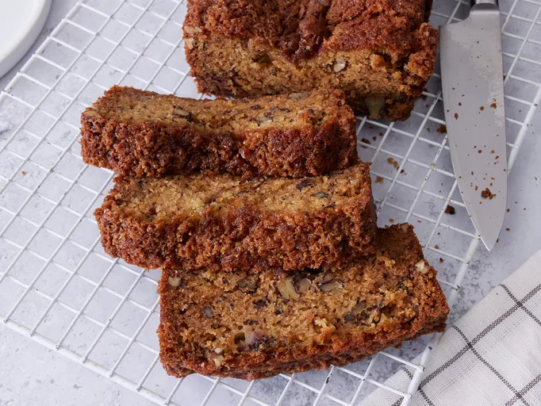

This is my best ever banana bread recipe. It really is the best I have ever tasted! It's very moist
and it freezes well. I also bake this in 3 small loaf pans however you may need to shorten the baking time.
Ingredients
1 cup sugar
1/2 cup butter, softened
2 eggs
3 ripe bananas, mashed
1 tablespoon milk
1 teaspoon vanilla extract
2 cups all-purpose flour
1 teaspoon baking powder
1 teaspoon baking soda
1/2 teaspoon salt
Steps
Preheat oven to 350°F (175°C). Grease and flour a 9x5 inch loaf pan.
In a large bowl, cream together the sugar and butter. Beat in the eggs one at a time, then stir in the
mashed
bananas, milk, and vanilla extract.
In a separate bowl, combine the flour, baking powder, baking soda, and salt. Gradually add the dry
ingredients to the banana mixture, stirring just until combined.
Pour the batter into the prepared loaf pan. Bake for 60-65 minutes, or until a toothpick inserted into the
center comes out clean.
Let the bread cool in the pan for 10 minutes, then turn out onto a wire rack to cool completely.